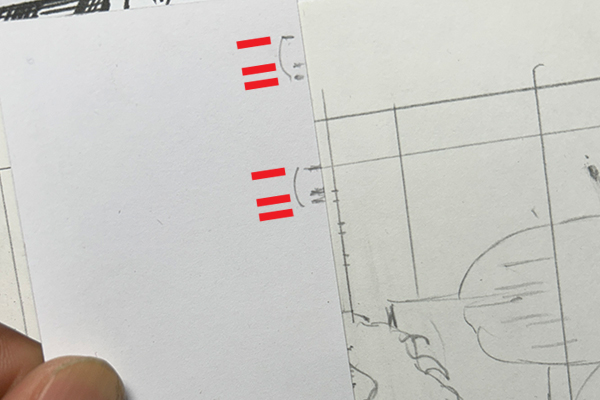
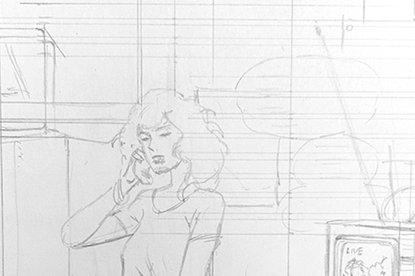
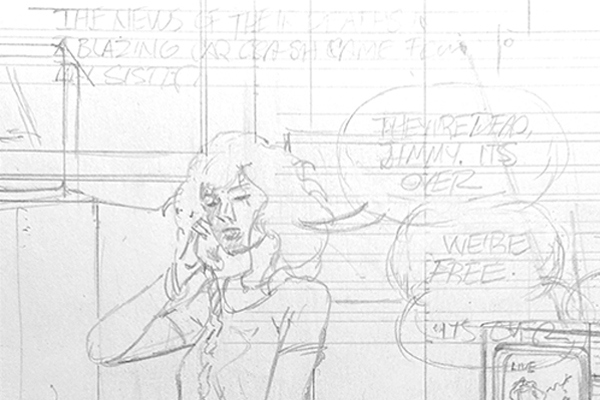
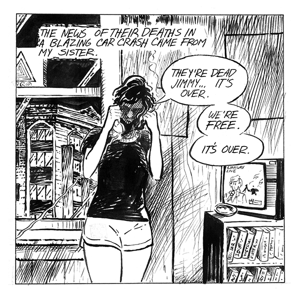
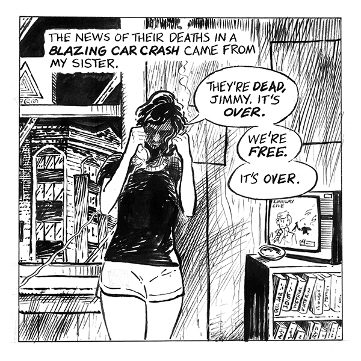

Handmade lettering guides
These were drawn on scrap paper or Post-It notes, cap heights and bottom margins eyeballed from looking at printed comics. The process was error-prone process at best. Measurements varied as the pencil points wore down, and there was always a danger of losing the guide on long projects. Using an Ames guide would've been a lot easier.
Recreation of my old lettering process



Lettering with markers
I didn't own or understand how calligraphy nibs worked at the time, and still treated lettering as an afterthought. After failing with drawing nibs and technical pens, I settled on allegedly permanent markers. Alex Toth and others did amazing work with them. My problem was being too lazy and dismissive to learn basic comics calligraphy. That would require spending hours studying and copying letterforms of professionals.
My old lettering had spunk and personality at the expense of consistency and legibility.
Original and reconstructed versions of an old panel
Original panel from "Bored Sick" lettered with homemade lettering guide and permanent marker. The 2025 reconstruction has professional hand lettering (Hunt 107 nib, bold with Speedball B6) on Ames guide 4.0 three-quarter ratio. The 2026 reconstruction is digitally lettered with Jack Armstrong font designed by Nate Piekos for Blambot.


In conclusion
Revisiting my old work proved that using an Ames guide is faster, easier, and more precise than my self-taught and avoidant alternative. The decision to avoid it and calligraphy nibs was based on youth and inexperience. My old lettering had a certain flair, but often sacrificed legibility and consistency for rugged indie spirit.
Dave Marshall, hiding in the rubble of the school they tore down to build the old school
{kind=link}